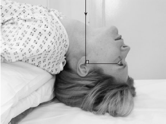

Skull(Submento vertical view)
Centering point:Right-angles to the orbito-meatal
plane and centred midway between the external auditory
meatuses
Cassette Size:24 x 30cm (10 x 12ins) Portrait
Exposure Factors:70kVp on 20MaS
FFD:100cm
Pathologies:#(Fracture), Trauma, FB(Foreign body),Idiopathic
Position of patient and cassette
- The patient may be imaged erect or supine. If the patient is
unsteady, then a supine technique is advisable.
- The patient’s shoulders are raised and the neck is hyperextended
to bring the vertex of the skull in contact with the
grid cassette or table.
.
- The head is adjusted to bring the external auditory meatuses
equidistant from the cassette.
- The median sagittal plane should be at right-angles to the
cassette along its midline.
- The orbito-meatal plane should be as near as possible parallel
to the cassette